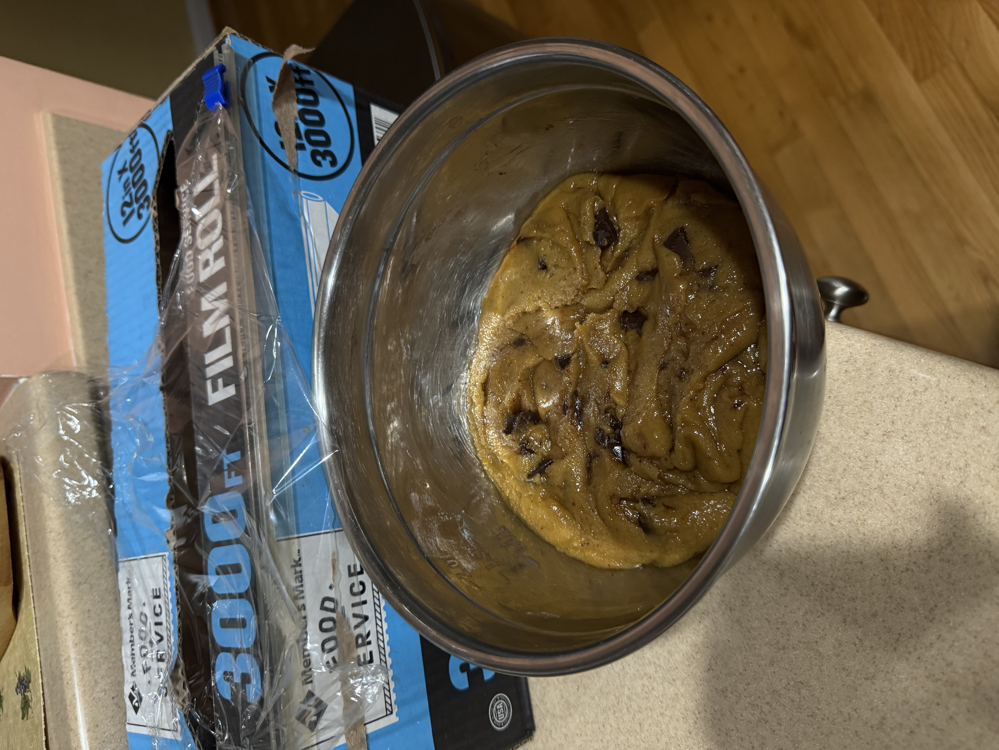

Cookies & Bars
Chocolate
Chip Cookies
Browned butter, crisp edges, chewy centers, and plenty of chocolate. Based on Broma Bakery’s recipe.

Ingredients
15
Click any measured ingredient to switch just that row between US and metric.
Method
0 / 6 donePhoto gallery
